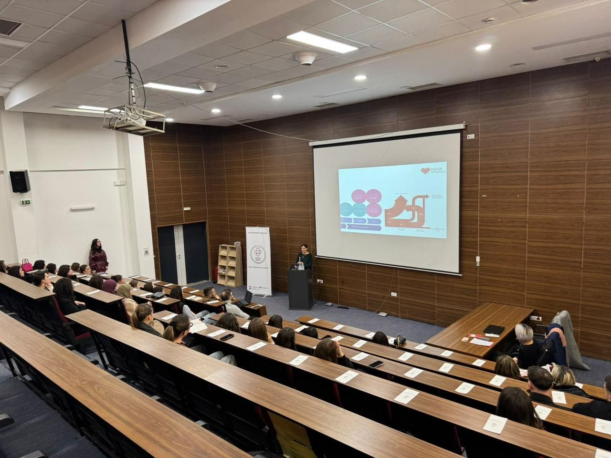
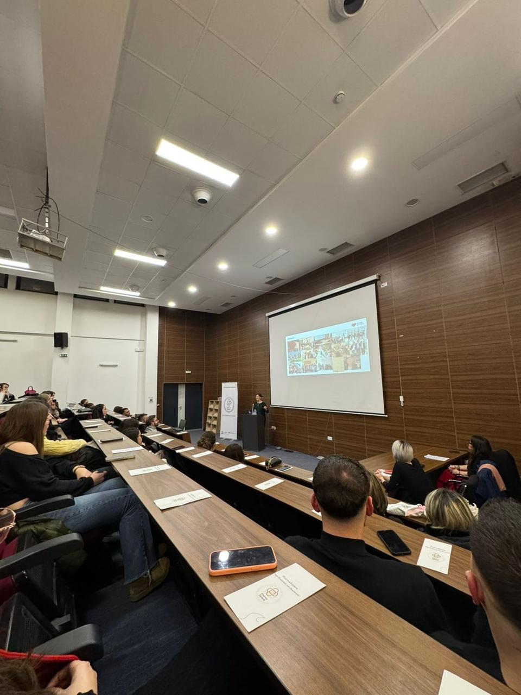
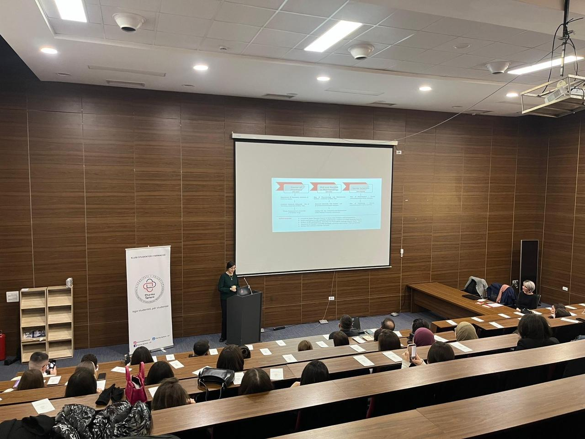
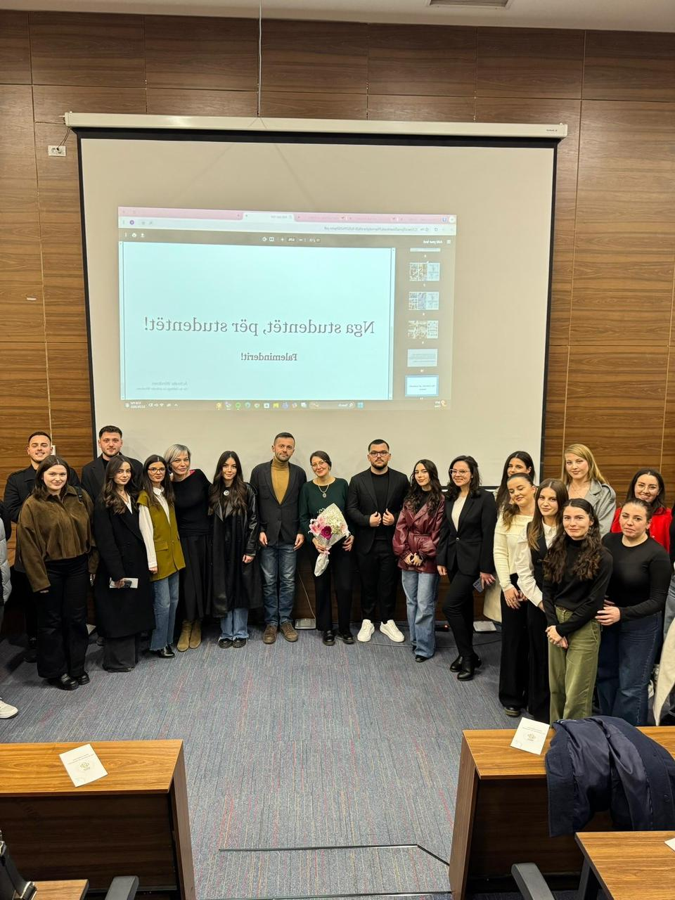

Një vit me PharmaSphere Viti 2025 u përmbyll me ligjëratën e Monika Sveçlës, PhD, eksperte në farmakologjinë klinike, me fokus në farmakologjinë kardiovaskulare dhe neurologjike, sindromat metabolike dhe obezitetin, si dhe me përvojë në omics. Ky aktivitet i ofroi studentëve mundësinë për t’u njohur me rrugëtimin akademik nga UP drejt universiteteve elitare ndërkombëtare, duke nxitur interesim në kërkim shkencor dhe duke u njoftuar me kontributin që mund të japin farmacistët në këtë fushë. Ligjërata përfshiu prezantimin e disa punimeve shkencore të avancuara, ndër autorët e të cilëve ishte Svecla.Përmes shembujve konkretë të rezultateve të punimeve, studentët panë se si njohuritë që ata i marrin gjatë rrugëtimit akademik në nivel të programit të farmacisë në UP, por edhe njohuritë e niveleve më të larta aplikohen në praktikën klinike dhe në hulumtimet shkencore në fushën e farmakologjisë klinike. Audienca, si stafi akademik prezent ashtu edhe studentët u angazhuan në pyetje dhe diskutime mbi rrugëtimin akademik, sfidat në laboratorë ndërkombëtarë, si dhe mënyrat për të ndërtuar bashkëpunime me universitetet ndërkombëtare, në të mirë të zhvillimit akademik dhe profesional të studentëve të farmacisë në UP. Një falënderim i veçantë shkon për ata që kontribuan në realizimin e kësaj ideje: Medimax për sponsorizimin e catering-ut të realizuar nga Sotto-Catering, Ujë Mokne për sigurimin e hidratimit dhe One Group për dhuratat me vlerë të përditshme për të gjithë të pranishmit. Gjithashtu, shprehim falënderimet tona të veçanta për stafin akademik: prof. Aida Shala-Loshaj, prof. Mimoza Basholli-Salihu, prof. Armond Daci dhe ass Toskë Kryeziu, për mbështetjen e vazhdueshme të ideve dhe aktiviteteve tona. Aktiviteti përmbylles i këtij viti përforcon misionin e PharmaSphere për të ofruar zhvillim akademik dhe profesional, duke krijuar një urë lidhëse midis edukimit universitar dhe praktikës shkencore, dhe duke i inkurajuar studentët që të synojnë ekselencë në fushën e farmacisë dhe kërkimit shkencor. Nga studentët, për studentët PharmaSphere